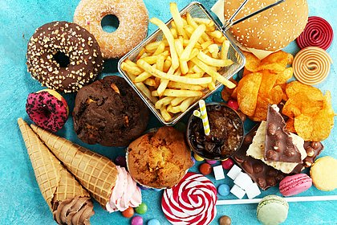

Nos últimos dez anos, o consumo de alimentos ultraprocessados pelos brasileiros teve aumento médio de 5,5%. É o que aponta estudo sobre o perfil de consumidores, divulgado pela Revista de Saúde Pública da Universidade de São Paulo (USP), feito pelo Núcleo de Pesquisas Epidemiológicas em Nutrição e Saúde (Nupens/USP). O núcleo é responsável pelo Guia Alimentar para a População Brasileira.
“O aumento do consumo de alimentos ultraprocessados entre 2008 e 2017, embora não tenha sido muito grande, foi significativo. Esse aumento corrobora outras pesquisas que avaliaram compras das famílias brasileiras desde a década de 1980, mostrando que o aumento vem ocorrendo há décadas”, explicou a vice-coordenadora do Núcleo de Pesquisas Epidemiológicas em Nutrição e Saúde da Universidade de São Paulo (Nupens/USP), Maria Laura Louzada
Os alimentos ultraprocessados são formulações industriais prontas para consumo, feitas com inúmeros ingredientes frequentemente obtidos a partir de colheitas de alto rendimento, como açúcares e xaropes, amidos refinados, gorduras, isolados proteicos, além de restos de animais de criação intensiva.Usualmente, esses alimentos contêm pouco ou nenhum alimento inteiro em sua composição, além de serem fartos em açúcar e gorduras e carentes de fibras e micronutrientes. Entre eles, estão refrigerantes, biscoitos de pacote, doces e salgados, macarrão instantâneo, alimentos prontos para aquecer, doces, balas, chocolates e embutidos como presunto, mortadela e outros.